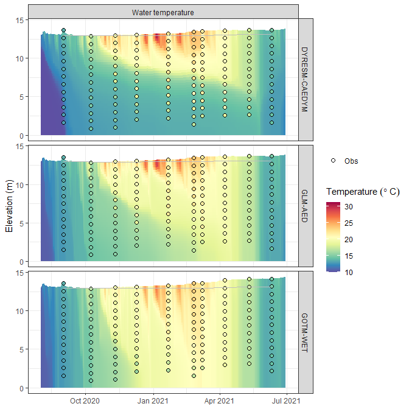
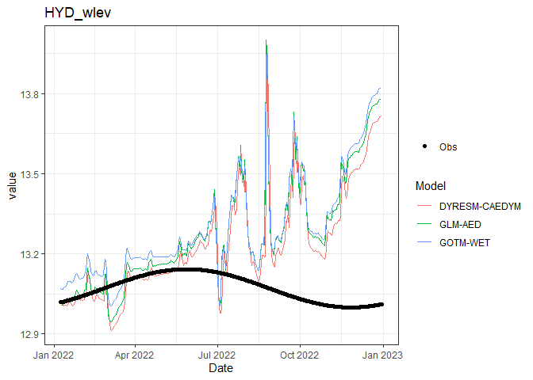

The Aquatic Ecosystem Model Ensemble (AEME) package allows you to setup and run an ensemble of aquatic ecosystem models. The models are DYRESM-CAEDYM, GLM-AED and GOTM-WET.
Installation
You can install the development version of AEME from GitHub with:
# install.packages("devtools")
devtools::install_github("limnotrack/AEME")Example
This is a basic example which shows you how to build and run one of the models in the ensemble:
library(AEME)
#>
#> Attaching package: 'AEME'
#> The following object is masked from 'package:stats':
#>
#> time
## basic example code
tmpdir <- tempdir()
aeme_dir <- system.file("extdata/lake/", package = "AEME")
# Copy files from package into tempdir
file.copy(aeme_dir, tmpdir, recursive = TRUE)
#> [1] TRUE
path <- file.path(tmpdir, "lake")
aeme <- yaml_to_aeme(path = path, "aeme.yaml")
#> Linking to GEOS 3.12.1, GDAL 3.8.4, PROJ 9.3.1; sf_use_s2() is FALSE
#> Warning in aeme_constructor(lake = yaml$lake, time = yaml$time, configuration = yaml$configuration, : Lake area [152343 m2] is different to the area calculated from the lake
#> shape [152433.09 m2].
model_controls <- get_model_controls(use_bgc = TRUE)
model <- c("dy_cd", "glm_aed", "gotm_wet")
aeme <- build_aeme(path = path, aeme = aeme, model = model,
model_controls = model_controls,
ext_elev = 5, use_bgc = TRUE)
#> Building simulation for Wainamu [2024-06-11 22:08:20]
#> Missing state variables in inflows: PHY_crypt
#> Added default values for missing variables.
#> Using observed water level
#> Missing values in observed water level
#> Using constant water level
#> Correcting water balance using estimated outflows (method = 2).
#> Calculating lake level using lake depth and a sinisoidal function.
#> Building DYRESM-CAEDYM for lake wainamu
#> Copied in DYRESM par file
#> Writing DYRESM configuration
#> [1] "TEMPTURE SALINITY DO PO4 DOPL POPL PIP TP NH4 NO3 DONL PONL TN DOCL POCL SiO2 CYANO CHLOR CRYPT FDIAT TCHLA SSOL1"
#> Writing DYRESM control file
#> Downsampling bathymetry
#> Building GLM3-AED2 model for lake wainamu
#> Copied in GLM nml file
#> Copied in AED nml file
#> oxy_initial = 625 replaced with 312.5
#> frp_initial = 0.3229 replaced with 0.3229
#> dop_initial = 0.3229 replaced with 0.3229
#> pop_initial = 0.3229 replaced with 0.3229
#> amm_initial = 1.4279 replaced with 1.4279
#> nit_initial = 1.0709 replaced with 1.0709
#> don_initial = 21.4183 replaced with 21.4183
#> pon_initial = 7.1394 replaced with 7.1394
#> doc_initial = 41.6285 replaced with 41.6285
#> poc_initial = 16.6514 replaced with 16.6514
#> rsi_initial = 1 replaced with 1
#> PHY_cyano 0.24022 replaced with 0.24022
#> PHY_green 0.300275 replaced with 0.300275
#> PHY_crypt replaced with
#> PHY_diatom 0.300275 replaced with 0.300275
#> ss_initial = 3,3 replaced with 3,
#> Building GOTM-WET for lake wainamu
#> Copied all GOTM configuration files
#> instances/abiotic_water/initialization/sO2W 13 replaced with 10
#> instances/abiotic_water/initialization/sPO4W 0.1 replaced with 0.01
#> instances/abiotic_water/initialization/sPDOMW 0.001 replaced with 0.01
#> instances/abiotic_water/initialization/sPPOMW 0.001 replaced with 0.01
#> instances/abiotic_water/initialization/sNH4W 0.05 replaced with 0.02
#> instances/abiotic_water/initialization/sNO3W 0.5 replaced with 0.015
#> instances/abiotic_water/initialization/sNDOMW 0.01 replaced with 0.3
#> instances/abiotic_water/initialization/sNPOMW 0.01 replaced with 0.1
#> instances/abiotic_water/initialization/sDDOMW 2.5 replaced with 0.5
#> instances/abiotic_water/initialization/sDPOMW 0.1 replaced with 0.2
#> instances/abiotic_water/initialization/sSiO2W 3.5 replaced with 1
#> instances/cyanobacteria/initialization/sDW 0.1 replaced with 0.2
#> instances/cyanobacteria/initialization/sNW 0.03 replaced with 0.03
#> instances/cyanobacteria/initialization/sPW 0.003 replaced with 0.0019
#> instances/greens/initialization/sDW 0.1 replaced with 0.1
#> instances/greens/initialization/sNW 0.05 replaced with 0.015
#> instances/greens/initialization/sPW 0.001 replaced with 0.00094
#> instances/diatoms/initialization/sDW 0.2 replaced with 0.25
#> instances/diatoms/initialization/sNW 0.05 replaced with 0.038
#> instances/diatoms/initialization/sPW 0.005 replaced with 0.0024
#> instances/abiotic_water/initialization/sDIMW 4 replaced with 3
aeme <- run_aeme(aeme = aeme, model = model, verbose = FALSE,
path = path, parallel = TRUE)
#> Running models in parallel... [2024-06-12 10:08:33]
#> Model run complete![2024-06-12 10:11:17]
#> Reading models in parallel... [2024-06-12 10:11:18]
#> Model reading complete![2024-06-12 10:11:21]The model input and output (I/O) is handled as it’s own S4 object of class aeme. This allows for the standardisation and generalisation of functions for this class alongside ensuring integrity and validity to it’s structure.
class(aeme)
#> [1] "aeme"
#> attr(,"package")
#> [1] "AEME"This allows for easier handling of the model output data within our structure and allows for condensed output to be printed to the console:
aeme
#> AEME
#> -------------------------------------------------------------------
#> Lake
#> Wainamu (ID: 45819); Lat: -36.89; Lon: 174.47; Elev: 23.64m; Depth: 13.07m;
#> Area: 152343 m2; Shape file: Present
#> -------------------------------------------------------------------
#> Time
#> Start: 2020-08-01; Stop: 2021-06-30; Time step: 3600
#> Spin up (days): GLM: 2; GOTM: 1; DYRESM: 1
#> -------------------------------------------------------------------
#> Configuration
#> Model controls: Present
#> Physical | Biogeochemical
#> DY-CD : Present | Present
#> GLM-AED : Present | Present
#> GOTM-WET : Present | Present
#> -------------------------------------------------------------------
#> Observations
#> Lake: Present; Level: Present
#> -------------------------------------------------------------------
#> Input
#> Inital profile: Present; Inital depth: 13.07m; Hypsograph: Present (n=132);
#> Meteo: Present; Use longwave: FALSE; Kw: 1.31
#> -------------------------------------------------------------------
#> Inflows
#> Data: Present; Scaling factors: DY-CD: 1; GLM-AED: 1; GOTM-WET: 1
#> -------------------------------------------------------------------
#> Outflows
#> Data: Present; Scaling factors: DY-CD: 1; GLM-AED: 1; GOTM-WET: 1
#> -------------------------------------------------------------------
#> Outflows
#> Data: Present; Scaling factors: DY-CD: 1; GLM-AED: 1; GOTM-WET: 1
#> -------------------------------------------------------------------
#> Water balance
#> Method: 2; Use: obs; Modelled: Absent; Water balance: Present
#> -------------------------------------------------------------------
#> Output:
#> DY-CD: Present
#> GLM-AED: Present
#> GOTM-WET: PresentModel data can be visualised easily using the plot_output() function
p1 <- plot_output(aeme = aeme, model = model, var_sim = "HYD_temp",
level = TRUE, var_lims = c(9, 30))
p1
#> Warning: Using size for a discrete variable is not advised.
#> Warning: Removed 240 rows containing missing values or values outside the scale range
#> (`geom_col()`). Also, visualising lake level plots.
p2 <- plot_output(aeme = aeme, model = model, var_sim = "LKE_lvlwtr",
facet = FALSE)
p2